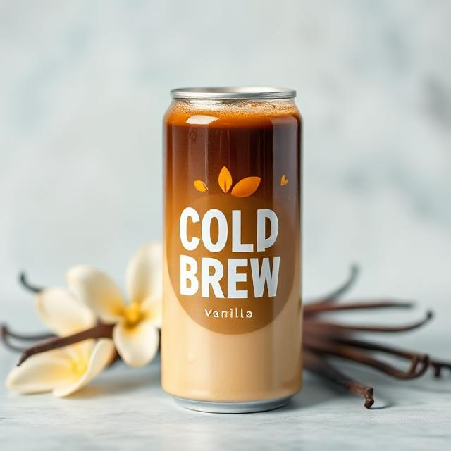
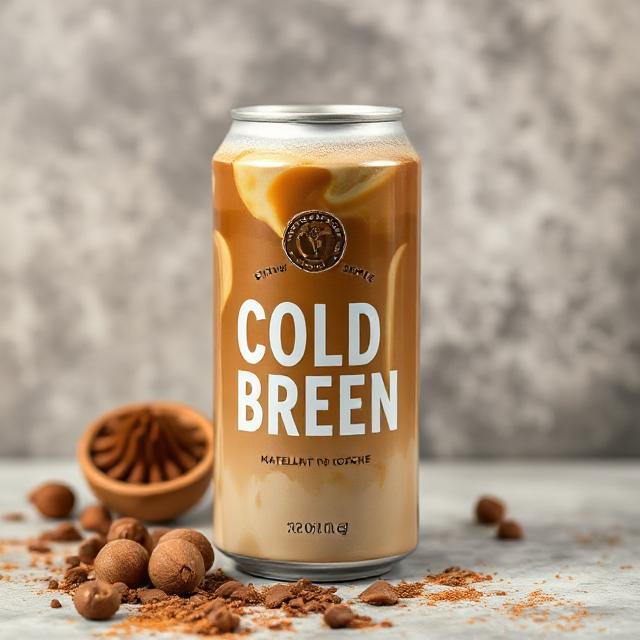
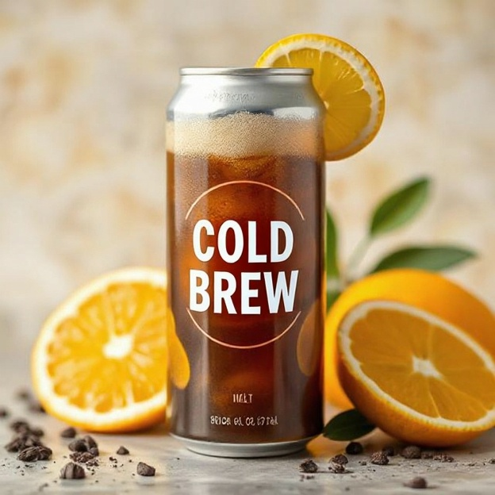

Our Story
FrostFlow Cold Brew Co.
Founded in 2020, FrostFlow Cold Brew Co. is a small, independent coffee brand with a passion for handcrafted cold brew. Our mission is to deliver a smooth, refreshing coffee experience that is both convenient and uncompromising in quality.
We carefully partner with local farms and sustainable suppliers to source the finest beans. Every cup reflects our commitment to ethical trade, sustainability, and the pure joy of coffee.
Cold brew is more than a beverage, it is a ritual of flavor, craftsmanship, and connection. Our small-batch brewing process brings out the natural sweetness, depth, and complexity of each bean, delivering a bold, clean, and refreshing taste.
As a community-focused brand, we proudly support local growers and sustainable practices, building relationships that nurture both people and the planet. Every bottle of FrostFlow embodies our dedication to quality, sustainability, and coffee crafted with care.
Product Showcase
Explore our products here.
|

Vanilla Bean Cold Brew Smooth and creamy with a hint of natural vanilla for a subtly sweet finish. |

Mocha Hazelnut Cold Brew Rich chocolate and roasted hazelnut notes blended into bold, refreshing coffee. |

Citrus Cold Brew Light and zesty with a touch of citrus for a bright, invigorating twist on classic cold brew. |
Featured Retailers
Pick n Pay
Pick n Pay is a South African retailer providing groceries, household goods, and other everyday products to communities across the country.
find a retailer near you.
Newsletter Signup
Stay updated with our latest news, products, and special offers. Sign up for our newsletter!